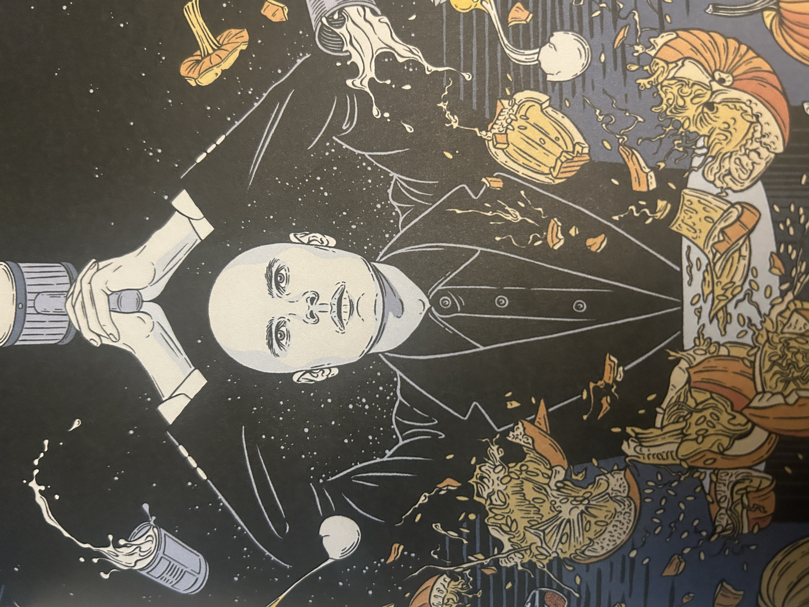
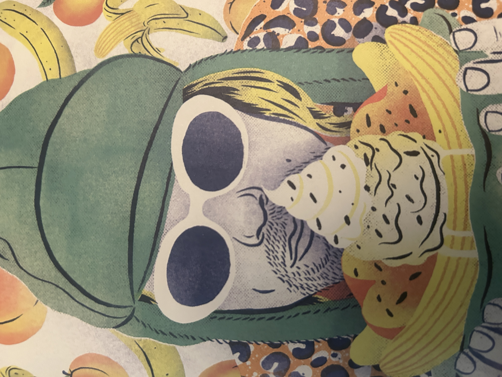

- Difficulty: 7/11
- Description: Classic pumpkin pie.
- B.P.m. 20 minutes preparation (plus cooling) 1 hour 15 minutes baking
- Ingredients:
- 1 tablespoon all-purpose flour
- 12 oz ready-made pie dough*
- 2 large eggs
- 1 x 15oz can puréed pumpkin
- 1 x 14oz can sweetened
- condensed milk
- 1 teaspoon ground cinnamon
- 1/2 teaspoon ground cloves
- 1 teaspoon ground ginger
- 1/2 teaspoon ground nutmeg or 1 tablespoon pumpkin pie spice
- A pinch of salt
- Whipping cream (as much as you wish)
- Lightly dust a clean work surface with the flour. Lay out the pie dough, and roll it until it is around 1/4 inch thick.
- Line a 9-inch tart pan with the pie dough, and place in the fridge for 10 minutes.
- Preheat your oven to 350 degrees F.
- Take the tart pan out of the fridge, and line with parchment paper, then fill with baking beans.
- Place the tart pan on the middle shelf of the oven and bake for 15 minutes.
- Remove the baking beans and parchment paper then return the tart pan to the oven and bake for additional 10 minutes.
- Remove the tart pan from the oven and set aside.
- Increase the oven temperature to 450 degrees F.
- Crack the eggs into a mixing bowl, then add the pureed pumpkin, condensed milk,
ground cinnamon, ground cloves, ground ginger, ground nutmeg (or pumpkin spice) and salt. Whisk the
Ingredients until even in color and well combined.
- Pour the mixture into the tart case, and gently tap the edges of the tart pan to settle the mixture.
- Place the tart on the middle shelf of the oven and bake for 10 minutes.
- Reduce the oven temperature to 350 degrees F, and bake for an additional 50 minutes.
- Take the pie out of the oven, and set aside to cool for 10 minutes. Transfer the pie to the fridge, and allow to cool for at least another 15 minutes.
- While the pie is cooling pour some whipping cream into a bowl and whisk vigorously by hand or with an electric whisk until thick.
- Carefully remove the pumpkin pie from the pan.

- Difficulty: 4/11
- Description: Baked peach and banana split with a whiskey twist.
- B.P.m. 40 minutes preparation 1 hour 10 minutes cooking
- Ingredients:
- 4 peaches
- 3 tablespoons Scotch whiskey
- 2 limes
- Generous 1/2 cup date nectar or golden syrup
- 31/2 oz dark chocolate
- 4 bananas
- 4 scoops of ice cream
- Aerosol whipped cream
- Notes:
For best results, use a whiskey aged at least 12 years.
- Cut the peaches in half and remove the pits.
- Place the peach halves in an ovenproof baking dish, and drizzle over the whiskey. Cut the limes in half, and squeeze the
juice from each half over the peaches. Place in the fridge, and leave the peaches to soak for 30 minutes.
- Preheat the oven to 425°F.
- Take the dish out of the fridge, and cover the peaches with the date nectar or golden syrup.
- Place in the oven and cook for 1 hour.
- While the peaches are baking, blitz the chocolate in the food processor until finely ground (if you don't have a food processor,
use a grater or finely chop the chocolate with a knife).
- Once cooked, remove the peaches from the oven, and spoon them into a mixing bowl.
- Tip the ground chocolate over the peaches and gently turn the mixture, being careful not to break the peaches.
- Slice the 4 bananas in half lengthwise, and place each pair of the banana halves in a bowl. Place 2 peach halves on top of
each serving.
- Divide the remaining nectar and chocolate mix between each bowl, pouring it over the banana and peaches.
- Before serving, add a scoop of ice cream to each bowl, and aerosol whipped cream to your taste.